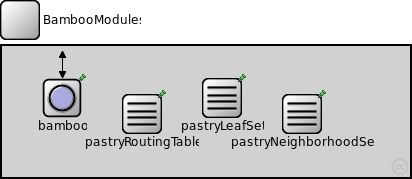
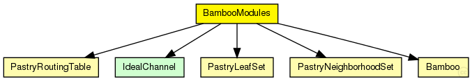
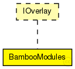

This documentation is released under the Creative Commons license
This documentation is released under the Creative Commons licenseImplementation of the Bamboo KBR overlay as described in ...
Author: Gerhard Petruschat
The following diagram shows usage relationships between types. Unresolved types are missing from the diagram. Click here to see the full picture.
The following diagram shows inheritance relationships for this type. Unresolved types are missing from the diagram. Click here to see the full picture.
| Name | Direction | Size | Description |
|---|---|---|---|
| udpIn | input |
gate from the UDP layer |
|
| udpOut | output |
gate to the UDP layer |
|
| tcpIn | input |
gate from the TCP layer |
|
| tcpOut | output |
gate to the TCP layer |
|
| appIn | input |
gate from the application |
|
| appOut | output |
gate to the application |
| Name | Type | Default value | Description |
|---|---|---|---|
| bamboo.rpcUdpTimeout | double |
default timeout value for direct RPCs |
|
| bamboo.rpcKeyTimeout | double |
default timeout value for routed RPCs |
|
| bamboo.optimizeTimeouts | bool |
calculate timeouts from measured RTTs and network coordinates |
|
| bamboo.rpcExponentialBackoff | bool |
if true, doubles the timeout for every retransmission |
|
| bamboo.localPort | int |
UDP port for overlay messages |
|
| bamboo.debugOutput | bool |
enable debug output |
|
| bamboo.keyLength | int |
overlay key length in bits |
|
| bamboo.nodeId | string |
optional nodeId as string in hexadecimal notation |
|
| bamboo.useCommonAPIforward | bool |
enable CommonAPI forward() calls |
|
| bamboo.drawOverlayTopology | bool |
draw arrow to successor node? |
|
| bamboo.hopCountMax | int |
maximum number of overlay hops |
|
| bamboo.recNumRedundantNodes | int |
numRedundantNodes for recursive routing |
|
| bamboo.joinOnApplicationRequest | bool |
only join the overlay on application request |
|
| bamboo.collectPerHopDelay | bool |
delay statistics for single hops |
|
| bamboo.routeMsgAcks | bool |
use RPCs for route messages |
|
| bamboo.lookupRedundantNodes | int |
number of next hops in each step |
|
| bamboo.lookupParallelPaths | int |
number of parallel paths |
|
| bamboo.lookupParallelRpcs | int |
number of nodes to ask in parallel |
|
| bamboo.lookupVerifySiblings | bool |
true, if siblings need to be authenticated with a ping |
|
| bamboo.lookupMajoritySiblings | bool |
true, if sibling candidates are selected by a majority decision if using parallel paths |
|
| bamboo.lookupMerge | bool |
true, if parallel Rpc results should be merged |
|
| bamboo.lookupFailedNodeRpcs | bool |
communicate failed nodes |
|
| bamboo.lookupStrictParallelRpcs | bool |
limited the number of concurrent rpcs to parameter parallelRpcs |
|
| bamboo.lookupUseAllParallelResponses | bool |
merge all parallel responses from earlier steps |
|
| bamboo.lookupNewRpcOnEveryTimeout | bool |
send a new RPC immediately after an RPC timeouts |
|
| bamboo.lookupNewRpcOnEveryResponse | bool |
send a new RPC after every response, even if there was no progress |
|
| bamboo.lookupFinishOnFirstUnchanged | bool |
finish lookup, if the last pending RPC returned without progress |
|
| bamboo.lookupVisitOnlyOnce | bool |
if true, the same node is never asked twice during a single lookup |
|
| bamboo.lookupAcceptLateSiblings | bool |
if true, a FindNodeResponse with sibling flag set is always accepted, even if it is from a previous lookup step |
|
| bamboo.routingType | string |
default routing mode (iterative, semi-recursive,...) |
|
| bamboo.rejoinOnFailure | bool |
rejoin after loosing connection to the overlay? |
|
| bamboo.sendRpcResponseToLastHop | bool |
needed by KBR protocols for NAT support |
|
| bamboo.recordRoute | bool |
record visited hops on route |
|
| bamboo.dropFindNodeAttack | bool |
if node is malicious, it tries a findNode attack |
|
| bamboo.isSiblingAttack | bool |
if node is malicious, it tries a isSibling attack |
|
| bamboo.invalidNodesAttack | bool |
if node is malicious, it tries a invalidNode attack |
|
| bamboo.dropRouteMessageAttack | bool |
if node is malicious, it drops all received BaseRouteMessages |
|
| bamboo.measureAuthBlock | bool |
if true, measure the overhead of signatures in rpc messages |
|
| bamboo.restoreContext | bool |
if true, a node rejoins with its old nodeId and malicious state |
|
| bamboo.enableNewLeafs | bool |
enable Pastry API call newLeafs() |
|
| bamboo.optimizeLookup | bool |
whether to search the closest node in findCloserNode() calls |
|
| bamboo.bitsPerDigit | int |
bits per Pastry digit |
|
| bamboo.numberOfLeaves | int |
number of entries in leaf set |
|
| bamboo.numberOfNeighbors | int |
number of entries in neighborhoot set |
|
| bamboo.joinTimeout | double |
seconds to wait for STATE message from closest node |
|
| bamboo.repairTimeout | double |
how long to wait for repair messages |
|
| bamboo.useRegularNextHop | bool | ||
| bamboo.alwaysSendUpdate | bool |
tables delayed (should be very small) |
|
| bamboo.readyWait | double |
seconds to wait for missing state messages in JOIN phase |
|
| bamboo.proximityNeighborSelection | bool |
enable PNS ? |
|
| bamboo.localTuningInterval | double |
interval for periodic routing table maintenance |
|
| bamboo.leafsetMaintenanceInterval | double |
leafset push/pull interval |
|
| bamboo.globalTuningInterval | double |
global tuning interval |
// // Implementation of the Bamboo KBR overlay as described in // ... // // @author Gerhard Petruschat // module BambooModules like IOverlay { gates: input udpIn; // gate from the UDP layer output udpOut; // gate to the UDP layer input tcpIn; // gate from the TCP layer output tcpOut; // gate to the TCP layer input appIn; // gate from the application output appOut; // gate to the application submodules: bamboo: Bamboo { parameters: @display("p=60,52;i=block/circle"); } pastryRoutingTable: PastryRoutingTable { parameters: @display("p=140,68;i=block/table"); } pastryLeafSet: PastryLeafSet { parameters: @display("p=220,52;i=block/table"); } pastryNeighborhoodSet: PastryNeighborhoodSet { parameters: @display("p=300,68;i=block/table"); } connections allowunconnected: udpIn --> bamboo.udpIn; udpOut <-- bamboo.udpOut; appIn --> bamboo.appIn; appOut <-- bamboo.appOut; }
This documentation is released under the Creative Commons license